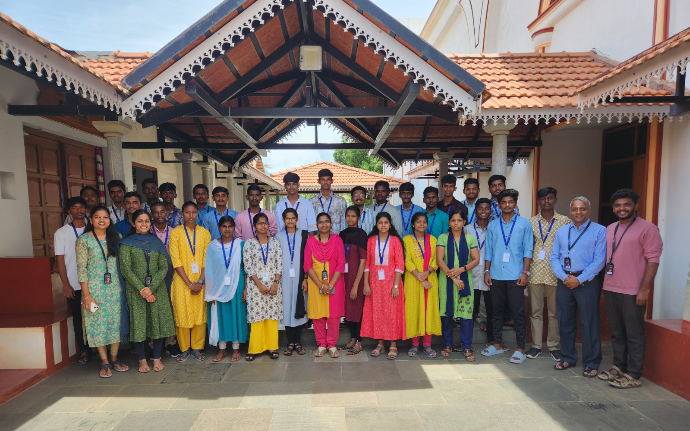
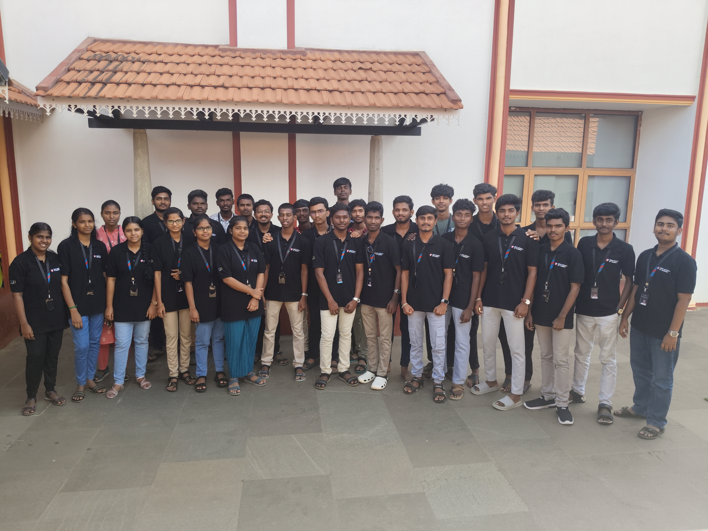

Application Process
I waited really very long, almost 7 months, to apply for ZS. I often visit the Page to apply for ZS, But end up with disappointment.
What I got to see there is,
All of a sudden, There was an application form in the page. I hurried to fill out the form, but I hadn't properly uploaded my projects in the GitHub. So, I started to prepare the projects, collected all of them and moving them to a same folder, then committing and pushing them to my github repositories.
I filled the form again and this time I properly submitted it.
Interview Process
I applied for the ZS through examless approach, but got no update about that. I am really frustated that my projects were not selected.
But on 26th March 2025, I got an email from Zoho that my projects were selected. I had an interview in ZS, Tenkasi, on 2nd April. I am very afraid that I may not get selected in the interview process. Even a day before the interview, I burned my shirt while ironing it, and I felt that as a bad omen. I confirmed and affirmed myself that I am not going to get selected because of that bad omen feeling.
On that day, I entered the Zoho Campus with thousands of questions and fears clouded on my head. With fear, I attended the interview. Almost 15 students were shortlisted for interview. Only 11 attended the interview process.
Fortunately, I got selected in the Interview.
Point where my Career started.
I revisited the Zoho Campus on 28th May - The First Day of my learning journey. We had an Induction Program on that day. From the Next day, Classes started.
I really love programming, and Now I am happy that Programming is now my Career. I started learning further more eagerly.
I got really awesome friendly faculties to teach me and to clarify my doubts. Also, I got 29 (30 if myself included) new friends gems.
I will barely forget that day, 28th May, where it all started


Learning Journey...
We learnt programming concepts through Scratch. We all did a Project with the Scratch. Now we are learning HTML and CSS.
I accept thatAnd, The time I waited to be a part of this Zoho reminds me thatAn Unforgettable Journey starts with a Desire to explore and learn...